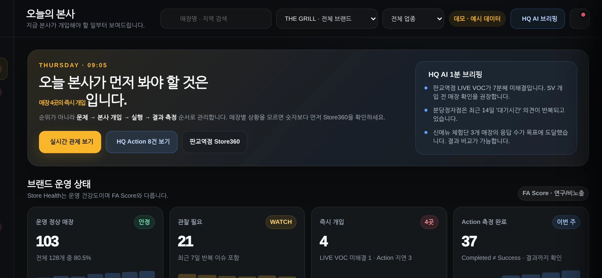
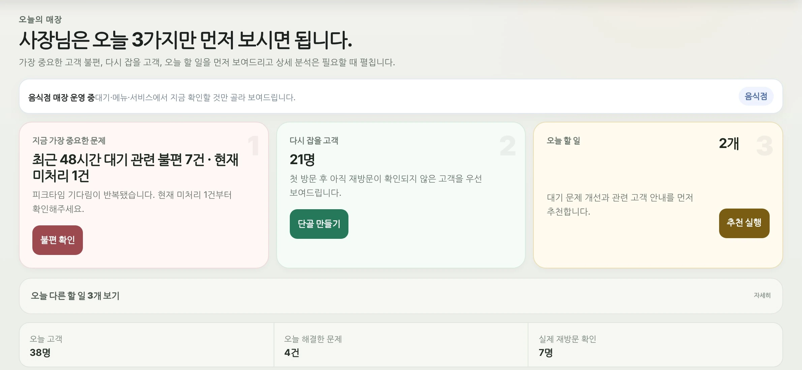

10-2026-00722902026-04-21
운영 미션 데이터 기반 신용평가·혜택
발명의 명칭 전체 보기
오프라인 운영 미션 수행 데이터 기반 신용평가 점수 산출을 통한 혜택 제공 방법 및 전자 장치
고객의 목소리와 매장의 하루를 하나의 데이터로 잇습니다. THE FA는 본사와 기업이 더 빠르게, 더 확실한 근거로 움직일 수 있도록 오프라인 데이터 인프라를 연구·개발합니다.
고객 신호부터 매장 안전, 위생 평가, 자율경영 처방까지. 오프라인 운영의 핵심 과정을 기술로 설계하고 특허로 출원했습니다.
오프라인 운영 미션 수행 데이터 기반 신용평가 점수 산출을 통한 혜택 제공 방법 및 전자 장치
매장 내 위기 상황 감지 방법 및 전자 장치
매장의 위생 상태를 평가하는 방법 및 전자 장치
오프라인 매장의 자율경영 처방을 생성하는 방법 및 전자 장치
위 4건은 특허 출원 단계이며, 아직 등록된 특허가 아닙니다. 심사 경과에 따라 표기를 갱신합니다.
고객 신호를 읽는 데서 멈추지 않습니다. 문제를 구조화하고, 실행을 제안하며, 그 결과를 다시 데이터로 검증하는 기술을 연구합니다.
방문·재방문 신호와 고객 의견(VOC)을 하나의 흐름으로 이해하고, 다음 행동을 제안하는 방향을 연구합니다.
문제 발견, 실행 지시, 결과 측정을 근거·승인·확인 흐름으로 잇는 방향을 연구합니다.
판매·수요·재고·메뉴·인력의 결정 흐름을 매장·상권 맥락과 함께 잇는 방향을 연구합니다.
고객 관찰 신호를 최소 정보로 다루고, 민감한 항목은 사람의 확인을 우선으로 처리하는 방향을 연구합니다.
규격이 서로 다른 국내 공공·사업 데이터를 도입 게이트를 거쳐 매장·본사의 결정 근거로 잇는 방향을 연구합니다.
오프라인 사업자는 매일 수많은 개선과 실행을 만들지만, 그 과정은 신뢰의 데이터로 남기 어렵습니다.
매출만이 아니라 문제를 발견하고 개선하며 결과를 만들어내는 운영 역량까지 설명할 수 있는 데이터.
THE FA는 고객 경험, 매장 운영 행동, 실행 결과를 축적·검증해 FA Operating Score로 발전시키고, 장기적으로 오프라인 매장의 대안신용평가 데이터 기반을 만드는 것을 목표로 합니다.
장기 목표입니다. 현재 공인 신용평가업 수행, 금융기관 공식 제휴, 대출 승인 실적, 상용화 완료를 의미하지 않습니다.
재방문·VOC·익명 매장 신호가 매장별 이벤트로 쌓입니다.
본사 매뉴얼과 검증된 사례를 근거로 다음 행동이 실행됩니다.
실행 결과가 측정되고 근거로 다시 기록됩니다.
고객·실행·결과의 시간 축이 하나의 신뢰 가능한 이력이 됩니다.
콘셉트 이미지가 아닌, 운영 중인 서비스와 개발 중인 플랫폼의 화면을 있는 그대로 보여드립니다. 화면 속 매장명과 수치는 모두 예시 데이터입니다.
매장에서 올라오는 신호를 본사의 실행과 결과로 잇는 본사 운영 플랫폼입니다. 오늘의 본사·실시간 관제·LIVE VOC·본사 Action이 Issue → Action → Outcome 하나의 흐름으로 움직입니다.

HQ Control Center · 오늘의 본사 · 2026-08-26 기준 개발 화면 · 예시 데이터
고객 진입, 익명 VOC, 리턴패스, 점주 Owner OS까지 방문의 순간을 다음 방문의 이유로 잇는 고객 관계 플랫폼입니다.

Owner OS · 오늘 · 2026-08-26 기준 개발 화면 · 예시 데이터
얼굴선과 분위기를 살펴 K-FACE 이야기부터 맞춤 뷰티·그루밍, 추천 상품까지 잇는 뷰티·스타일 서비스입니다. 계절·취향·약속까지 더해 오늘의 코디를 완성하는 상미 2.0도 개발하고 있습니다.

상미 · 정식 사이트 첫 화면 · sangme.thefa.co.kr · 모델은 가상 이미지
서로 다른 제품이 하나의 운영 데이터 구조 위에서 자랍니다. 문제·실행·결과가 이어져 다음 결정의 근거가 됩니다.
고객 방문·VOC·이탈 신호, 매장의 운영 이슈, 본사 지시, 지원사업 공고 등 문제가 감지됩니다.
본사 매뉴얼과 검증된 사례를 근거로 다음 행동이 준비되고 사람의 확인·승인을 거쳐 실행됩니다.
실행 결과가 측정되고 기록됩니다. 매장의 운영 역량이 시간 축으로 쌓여 FA Operating Score의 재료가 됩니다.
부풀린 진행률 대신, 각 제품이 지금 어디까지 왔고 다음에 무엇을 검증할지 있는 그대로 적었습니다. 2026년 9월 기준.
고객 진입·익명 VOC·8개 행운게임·리턴패스·Owner OS의 흐름을 검증합니다.
핵심 고객 흐름 안정성 · 매장 운영 준비 · 본사 연결 확장. 단골리턴 고객 흐름 보기
기존 14개 작업영역을 보존하면서 매장 신호와 본사 실행을 잇는 데이터 구조를 정리합니다.
본사 데이터·업무 흐름 통합 · 매장별 개선 실행의 근거 강화. 프랜차이즈 본사 운영 화면 보기
파트너 레지스트리 등 주요 화면이 브라우저·기기별 테스트 시나리오를 통과했습니다. 실제 운영 환경 검증은 다음 단계입니다.
직원 업무·재무·세무사 협업 통합 · 승인·검증 흐름 정착. Control Tower 기능 보기
공고 탐색·신청 가능성 검토·회사자료 재사용·기관별 양식·제출 전 검토·재도전 준비 흐름을 개발합니다.
회사자료 연결의 정확성 확인 · 기관별 양식·검토 절차 검증. 정부기관 공식 제휴나 자동 제출 서비스는 아닙니다. 업무 흐름 보기
비회원·회원 대시보드가 화면 테스트를 통과했고, 스타일 버전 체험판(0.1)과 상미 2.0 큐레이션 첫 화면을 개발하고 있습니다.
얼굴 분석·실시간 날씨·상품 검색·계정 연동 없이도 완결되는 체험 흐름부터 다듬습니다. 상미 경험 보기
비개발자 화면 편집 도구와 결제·크레딧·정산 기록의 정확성·재시도 안전성을 확인합니다.
안전한 저장·검증 흐름 정착 · 승인된 범위의 결제 운영 연결 준비. Visual Studio 기능 보기
THE FA는 흩어진 고객 경험과 운영 행동을 하나의 신뢰 가능한 데이터 흐름으로 연결합니다. 더 나은 실행이 더 나은 결과로 이어지고, 그 기록이 사업의 다음 기회를 여는 인프라를 만듭니다.
오프라인 매장의 내일을 함께 설계할 파트너를 기다립니다. 도입 상담부터 기술·데이터 협력, 투자까지 편하게 연락 주세요.
THE FA는 오프라인 사업의 운영 신호를 검증 가능한 데이터와 실행으로 잇는 데이터 인프라 기업입니다. 단골리턴에서 출발해 매장·본사·기업 운영까지 이어지는 인프라를 연구·개발합니다.
매장·프랜차이즈 도입, 기술·데이터 협력, 콘텐츠·커머스 협력, 기업 운영·개발 생산성 협력까지 폭넓게 열려 있습니다.
협력 분야와 간단한 소개를 보내 주시면 담당자가 확인 후 연락드립니다.